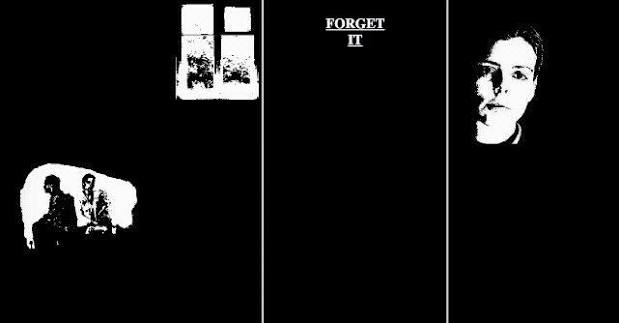
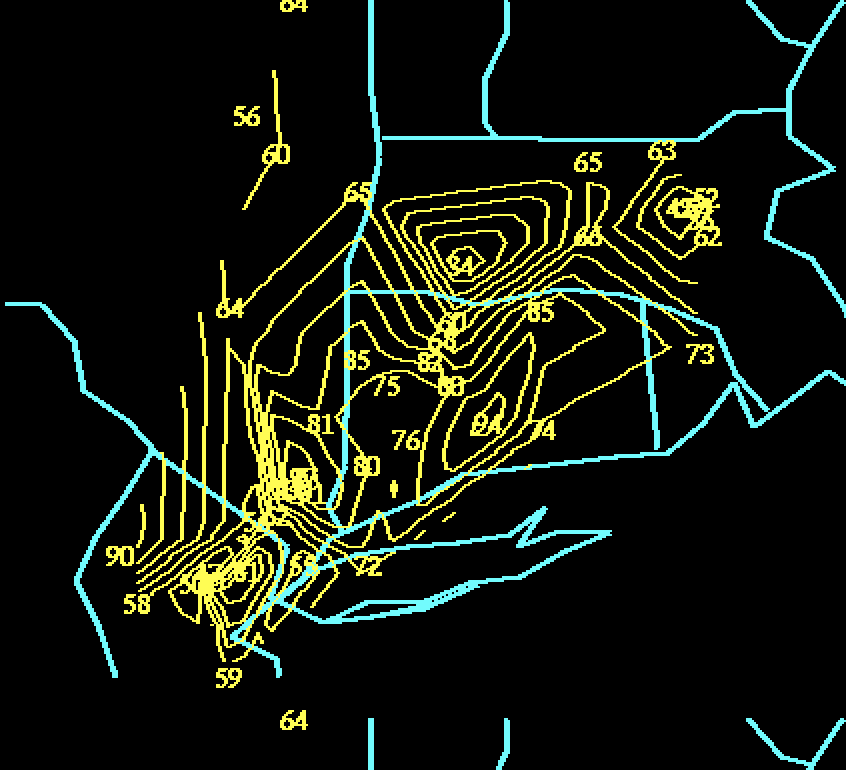
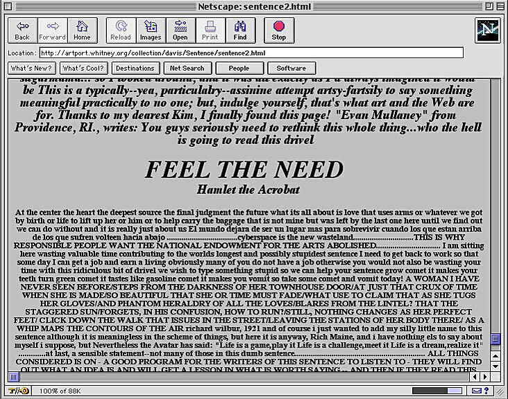
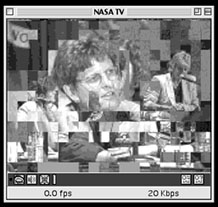
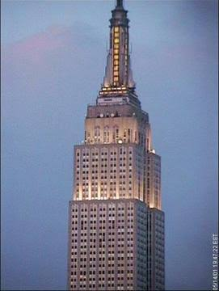

HISTORY OF WEB ART
Characteristics of early internet art
- Interactivity and Participation
- Early internet art required the viewer to become a participant, often transforming passive browsing into active engagement. Works were rarely static; they were designed to be clicked, manipulated, or altered by the user, making the audience a part of the creative process.
- Immateriality and Virtual Existence
- Unlike traditional art, early internet art often existed only in the digital realm, defying physicality and traditional gallery structures. It lived as code on servers, HTML, and browser windows, emphasizing a "non-object" or ephemeral quality.
- Networkability and Connectivity
- The art was often distributed and social, relying on email lists, web browsers, and hyperlinks to create a "networked" experience. This enabled global reach and fostered collaboration, as seen in projects shared across distributed, international communities.
- Use of "Web 1.0" Aesthetics and Code
- Artists often used the raw tools of the early internet—basic HTML code, browser frames, glitch aesthetics, and early graphic user interfaces—as their medium. Examples include the chaotic, anti-aesthetic, and deconstructive work of collective JODI, which treated code and error messages as art.
- Subversion of Institutions and Commercialism
- Early internet art often held a "utopian," democratic ethos, aiming to bypass traditional art galleries, museums, and market structures. It was often created by enthusiasts and artists operating outside conventional commercial art systems.
Early Web Artists 1990-2005
| WEB ARTIST | DESCRIPTION OF WORK | LINKED THUMBNAIL |
|---|---|---|
| Olia Lialina | My Boyfriend Came Back From the War (1996) is an interactive web artwork that tells a fragmented story through black-and-white images, text, and hyperlinks. Its unusual structure allows the viewer to navigate the story in different ways instead of following one fixed path. |
 |
| JODI (Joan Heemskerk and Dirk Paesmans) | JODI created experimental web art that uses glitches, code errors, broken interfaces, and confusing navigation as part of the artwork. Their 1995 website jodi.org turned the browser itself into an unpredictable and chaotic artistic experience. |
 |
| Douglas Davis | The World's First Collaborative Sentence (1994) is an interactive online artwork that invited people around the world to add their own words to one continuously growing sentence. The audience became part of the artwork by contributing directly to it. |
 |
| Tina LaPorta | Distance (1999) is a web-based artwork that explores communication between people who are physically separated. LaPorta combined images and text from online video conversations to explore how the internet can create both connection and distance. |
 |
| Wolfgang Staehle | Empire 24/7 (1999) used a live image of the Empire State Building that was transmitted through the internet. The work was unique because it used the web to turn an ordinary city view into a continuously changing artwork experienced in real time. |
 |